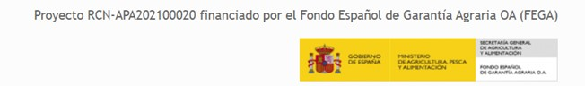

Fondo Garantía Agrícola Español FEGA. Ministerio de Agricultura, Pesca y Alimentación. (Convenio UPM-FEGA)
El proyecto se desarrolla en el marco de un convenio entre la UPM y el FEGA (BOE 7 junio 2021) y se encuentra actualmente en ejecución (julio 2021-julio 2025).
Desde julio 2021, investigadores de GEOSO2 han participado en las diversas fases del proyecto llevadas a cabo: (1) Estructuración de la base de datos de cultivos activos o abandonados a partir de la información del SIGPAC con el objetivo de obtener la mayor cantidad de datos de verdad terreno a lo largo del tiempo y con características geográficas diferentes; (2) construir las series de tiempo de imágenes Sentinel-2 desde 2017 a 2023 a partir de la interpolación de datos faltantes y suavizado de las series de manera que se pueda asociar la verdad terreno con el comportamiento de la información espectral obtenido de las imágenes; (3) Elaboración de parámetros que permitan diferenciar los cultivos activos de los abandonado a partir de análisis estadísticos de las series de imágenes Sentinel-2. (4) Con una selección de los parámetros identificados, se trabaja en el desarrollo, implementación y validación de un indicador de abandono a partir la modelación con inteligencia artificial.